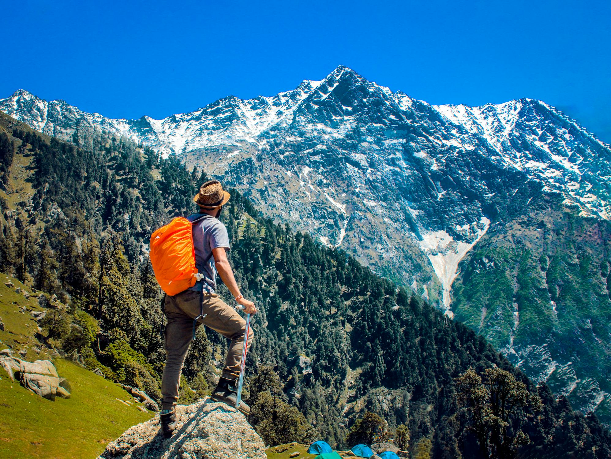

Valley of Flowers- Travel Blog

The Kumara Parvatha Trek, located in the scenic Western Ghats of Karnataka, is known for being one of the most challenging yet rewarding treks in South India. Towering at 1,712 meters, it offers breathtaking views, lush greenery, and a true test of endurance for trekking enthusiasts.
Highlights:
- Challenging trek through dense forests and rocky trails
- Panoramic views from the peak of the Pushpagiri Wildlife Sanctuary
- Enchanting sunrise and sunset views
- Rich biodiversity with unique flora and fauna
Quick Info:
- Start Point: Subrahmanya (Kukke Subramanya Temple)
- Distance: ~28 km (round trip)
- Difficulty: Challenging
- Best Time to Visit: October–February
Back to Hikes